A Quem Cuida é uma healthtech que promove saúde mental e bem-estar para profissionais da saúde. Fazemos isso por meio de uma solução digital que melhora o ambiente de trabalho e reduz a incidência de problemas como ansiedade, burnout e depressão.
Estamos trabalhando na Quem Cuida desde maio, quando criamos o projeto na nossa participação do Desafio USP Covid-19, quando fomos vencedores. Desde então, participamos do StartupLab, programa de pré-aceleração do NEU (Núcleo de Empreendedorismo da USP), quando refinamos o nosso conhecimento sobre o problema a ser resolvido, estabelecemos uma ideia de modelo de negócios e passamos a trabalhar em MVPs para testar nossas hipóteses Atualmente estamos tentando estabelecer uma parceria com o Escritório de Saúde Mental da USP e preparando um novo protótipo, dessa vez com o objetivo de testar na prática um acompanhamento de profissionais de um centro de saúde. Também estamos inscritos no programa de pré-aceleração Samsung Ocean, e caso sejamos aprovados, pretendemos utilizar desta oportunidade para desenvolver a nossa solução tecnológica.

Conheça o Neu
visite nosso site
Empresas parceiras
